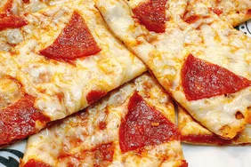

Pizza Recipe
Back to Recipes

Homemade Pizza
This homemade pizza recipe is easy to make and perfect for any occasion. Customize it with your favorite toppings!
Ingredients:
- 1 pizza dough (store-bought or homemade)
- 1/2 cup pizza sauce
- 1 1/2 cups shredded mozzarella cheese
- Your favorite toppings (pepperoni, mushrooms, bell peppers, olives, etc.)
- 1 tbsp olive oil
- Fresh basil leaves for garnish (optional)
Instructions:
- Preheat your oven to 475°F (245°C).
- Roll out the pizza dough on a floured surface to your desired thickness.
- Transfer the rolled-out dough to a pizza stone or baking sheet.
- Spread the pizza sauce evenly over the dough, leaving a small border around the edges.
- Sprinkle the shredded mozzarella cheese over the sauce.
- Add your favorite toppings evenly over the cheese.
- Drizzle olive oil over the top of the pizza.
- Bake in the preheated oven for 10-15 minutes, or until the crust is golden and the cheese is bubbly and slightly browned.
- Remove from the oven and let cool for a few minutes. Garnish with fresh basil leaves if desired.
- Slice and serve hot!